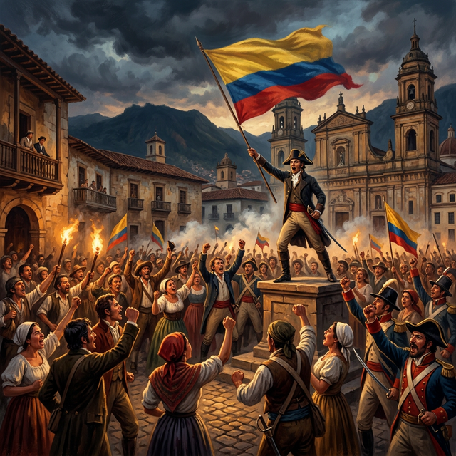
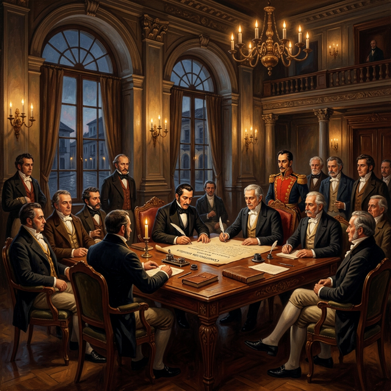
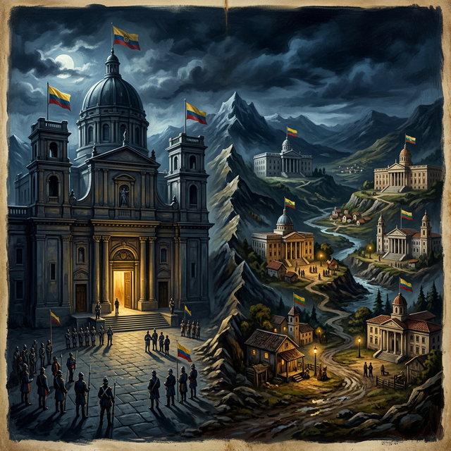

La evolución constitucional de Colombia refleja un proceso dinámico marcado por guerras civiles, cambios ideológicos entre centralismo y federalismo, y pugnas entre liberales y conservadores.
Tras el grito de independencia de 1810, surgieron constituciones provinciales con ideas mixtas monárquicas y autonomistas.
Primera constitución provincial del país
Constitución provincial autónoma
Estado libre e independiente


Gran Colombia: Colombia, Venezuela y Ecuador
Período presidencial de 6 años con sistema bicameral
CentralistaSe estableció la religión católica como oficial del Estado
Primer paso hacia la libertad de las personas esclavizadas
Avance socialPreparó la unión de las naciones para formar la Gran Colombia
Tras separación de Venezuela y Ecuador. Constitución centralista, presidencial con período de 8 años, católica oficial.
Centralista ConservadoraLiberal, descentralizada, presidencial con período de 4 años. Estableció la igualdad ante la ley.
Liberal DescentralizadaCentralista con sufragio restringido. Un retorno al control del poder central y la limitación del voto.
Conservadora CentralistaLibertad religiosa, separación Iglesia-Estado, abolición total de la esclavitud, mayor autonomía provincial.
Liberal radical8 estados soberanos con sistema federal y amplias libertades individuales.
FederalEstados Unidos de Colombia con 9 estados. Federalismo radical, presidencial con período de solo 2 años y libertades amplias.
Federal radical
Regeneración de Rafael Núñez — República de Colombia
La constitución más duradera en la historia de Colombia con 105 años de vigencia. Estabilizó el país tras guerras civiles, pero limitó el pluralismo.
Reforma con ideas sociales
SocialDesmonte del Frente Nacional
PolíticaElección popular de alcaldes
DemocraciaAsamblea Nacional Constituyente — Incluyendo exguerrilleros del M-19
Violencia, narcotráfico, guerrilla y el movimiento de la "Séptima Papeleta" impulsaron el cambio constitucional.
Pluralista y descentralizado, con un amplio catálogo de derechos fundamentales.
InclusivaAcción de tutela, reconocimiento de diversidad étnica, Corte Constitucional y Fiscalía independiente.
Reelección presidencial temporal (2005, eliminada 2015), equilibrio de poderes (2015), entre otras.
Colombia pasó de la inestabilidad del siglo XIX a la estabilidad con reformas (1886) y luego a un modelo inclusivo y social (1991), aunque con frecuentes ajustes que reflejan tensiones persistentes.
¡Gracias por su atención!